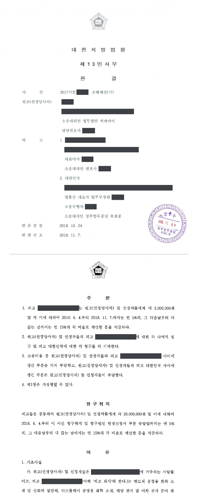

화학공장 불산 누출 사고 관련 인근 주민들의 국가배상 청구소송
대전지방법원 · 담당변호사 부효준
판결문

사건의 요지
화학공장에서 불산이 누출된 사고와 관련하여 인근 마을 주민들이 공장을 운영하는 회사와 국가를 상대로 위자료를 구한 사건으로, 국가에 대하여는 공무원들이 공장에 대한 감시·감독의무를 게을리하였는지가 다투어졌습니다. 법원은 주민들이 근거로 든 환경오염피해구제법 제4조 제1항은 국가의 추상적·포괄적 책무를 정한 규정일 뿐 개개 공무원의 구체적인 작위의무를 정한 것이 아니라고 보아 국가에 대한 청구를 받아들이지 않았습니다.
사건의 주요 내용
반도체·디스플레이 공정용 화학 소재를 만드는 회사가 운영하는 화학물질 취급시설(공장)에서 2016년 6월 불산이 누출되어 일부가 우수로를 통해 공장 밖으로 흘러나가고 불화수소 가스가 발생하는 사고가 일어났습니다. 이 공장에서는 그 전에도 2013년과 2014년에 불산·질산 누출 사고가 있었습니다.
공장 인근 마을에 사는 주민 10여 명은 선정당사자를 세워, 공장을 운영하는 회사와 국가가 공동하여 주민 1인당 2천만 원의 위자료를 지급하라는 소송을 제기하였습니다. 회사에 대하여는 환경오염피해 배상책임 및 구제에 관한 법률(환경오염피해구제법)에 따른 사업자의 배상책임을, 국가에 대하여는 국가배상법 제2조 제1항의 책임을 물었습니다.
부효준 변호사는 피고 가운데 국가를 대리하였고, 2018년 10월 변론이 종결되어 같은 해 11월 판결이 선고되었습니다.
원고의 주장
- 환경오염피해구제법 제4조 제1항은 화학사고 등의 예방을 위한 공무원의 구체적인 집행 의무를 정한 것인데, 관계 행정기관의 공무원들이 공장에 대한 감시·감독의무를 게을리하여 설비(파열판)의 노후를 파악하지 못하였으므로 국가가 회사와 공동하여 정신적 손해를 배상하여야 한다고 주장하였습니다.
- 감독기관이 사고 무렵 회사에 한 유독물영업 변경등록 관련 허가, 정기검사 적합 통보, 위해관리계획서 적합 통보, 재가동 허용 등은 직무를 게을리한 위법한 처분이고, 장외영향평가서를 제출받지 않은 것과 사고 이전에 회사의 영업허가를 취소하지 않은 것도 위법하다고 주장하였습니다.
부효준 변호사의 주장
- 이 사고는 파열판의 노후 때문이 아니라, 파열판이 정상적으로 작동하였을 때 불산이 모이는 임시 집수조와 폐수 집수조를 잇는 이송 펌프가 제대로 작동하지 않아 생긴 것이므로, 파열판의 노후를 적발하지 못하여 손해가 발생하였다고 볼 수 없다고 주장하였습니다.
- 관계 행정기관은 관련 법령에 따라 공장에 대한 관리·감독 의무를 성실하게 이행하였으므로 공무원이 직무상 고의·과실로 법령을 위반하였다고 볼 수 없고, 공무원의 행위로 주민들에게 손해가 발생하였다고 볼 수도 없다고 주장하였습니다.
법원의 판단
법원은 국가배상책임이 인정되려면 공무원이 직무를 집행하면서 고의 또는 과실로 법령을 위반하였고 그 법령 위반과 손해 사이에 상당인과관계가 있어야 한다는 국가배상법 제2조 제1항의 요건을 먼저 밝혔습니다. 주민들은 환경오염피해구제법 제4조 제1항 외의 법령 위반을 주장하지 않았는데, 이 규정은 국가에 추상적이고 포괄적인 책무를 지운 것에 불과하여 개개의 공무원에게 구체적인 작위의무가 생긴다고 볼 수 없다고 판단하였습니다.
나아가 장외영향평가서는 화학사고가 났을 때 주변 환경에 미치는 영향을 평가한 것일 뿐 시설의 노후 여부와는 무관하고, 이 사고는 파열판에 대한 관리·감독 소홀 때문이 아니라 임시 집수조의 수위 조절용 센서가 작동하지 않아 이송 펌프가 돌지 않았기 때문으로 보인다고 하였습니다. 유해화학물질 영업허가는 화학물질관리법 제35조 제1항이 열거한 사유가 있을 때에만 취소할 수 있으므로 영업허가를 취소하지 않은 것이 법령에 반한다고 볼 수도 없다고 하였습니다.
이에 따라 법원은 국가에 대한 청구를 모두 받아들이지 않았고, 그 부분 소송비용은 원고 측이 부담하도록 하였습니다. 공장을 운영하는 회사에 대하여는 사고로 인한 불안 등 정신적 손해를 인정하여 주민 1인당 500만 원의 위자료 지급을 명하였습니다.
환경오염피해구제법 제4조 제1항은 국가에 실효성 있는 환경오염피해 구제수단을 마련하고 피해경감을 위하여 필요한 시책을 강구할 추상적이고 포괄적인 책무를 부담시키고 있는 규정에 불과하고, 위 규정에 따라 개개의 공무원들에게 구체적인 작위 의무가 발생한다고 볼 수 없다.
대전지방법원 판결 이유 '4. 나.' 부분
※ 판결 이유 가운데 이 사건의 판단 기준이 된 부분을 그대로 옮긴 것으로, 당사자 이름 등은 가리고 금액은 어림으로 적었습니다.
이 사건이 보여 주는 것
사업장의 화학사고로 피해를 입었다며 국가에도 배상을 구하려면, 어느 공무원이 어떤 법령상의 구체적인 의무를 위반하였는지를 특정하여야 합니다. 국가의 일반적인 책무를 선언한 규정만으로는 공무원의 구체적인 작위의무가 인정되지 않습니다.
감독 소홀을 주장할 때에는 사고의 실제 원인과 주장하는 감독 의무 사이의 연결도 따져 보아야 합니다. 이 사건에서는 주민들이 문제 삼은 설비가 아닌 다른 장치의 고장이 사고 원인으로 드러났습니다.
비슷한 처분을 받으셨다면
행정처분은 처분이 있음을 안 날부터 90일 이내에 행정심판이나 취소소송으로 다투어야 하고, 기간이 지나면 돌이킬 수 없는 처분은 집행정지를 서둘러야 합니다. 처분서를 받은 날짜부터 확인해 드립니다.